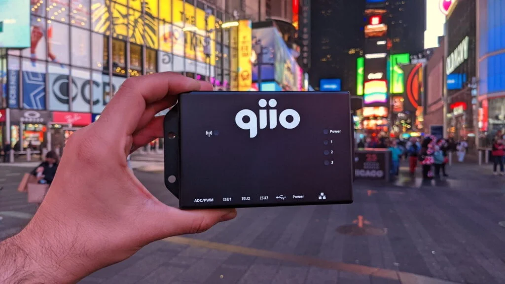

Zürich, January 12, 2021 – qiio, a Swiss provider of proven, leading edge
cellular IoT solutions today announced the grant of the worldwide first AT&T Network Optimized certification
for its Microsoft Azure Sphere cellular support devices, the q200 Guardian, Concentrator XN and Development
Kit.
AT&T, the world’s largest telecommunications company, has granted qiio’s q200 Guardian and Concentrator XN
products their Network Optimized certification. This is the first time worldwide that a cellular Microsoft
Azure Sphere enabled device has been certified, making qiio an integral part of AT&T IoT solutions in North
America as well as globally.
Felix Adamczyk, CEO of qiio said: “We are extremely proud to be the first company in the world to receive
the AT&T Network Optimized certification. This gives customers in the US and around the world the confidence
that qiio can deliver a secure, world-class cellular / Azure Sphere IoT solution that leverages AT&T’s
massive network. We are looking forward to scaling this solution over the coming months!”
qiio offers proven solutions to connect global assets quickly, securely and in a cost-effective manner. qiio
has combined robust edge technology based on Microsoft’s Azure Sphere with integrated security and
connectivity services to enable customers to achieve full control of their IoT deployments. This enables
enterprises to scale with cellular devices that self-configure and continuously improve to adapt to changing
network conditions.
The q200 Guardian is a key part of qiio’s 2022 strategy to deliver off-the-shelf IoT connectivity to
numerous brownfield and greenfield applications such as those found in Smart Spaces and Connected Kitchen.
About qiio
qiio delivers proven, edge-to-cloud solutions with intelligent cellular connectivity. You can rely on us to
provide scalable, reliable and secure IoT services and products supporting hard-to-reach as well as mobile
deployments, quickly and cost-effectively. www.qiio.com
Press contact:
Dorothy Kohl, VP Business Strategy Sales & Marketing qiio AG
Am Wasser 24
8049 Zurich
Switzerland
Email: dorothy.kohl@qiio.com